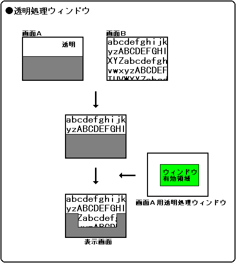
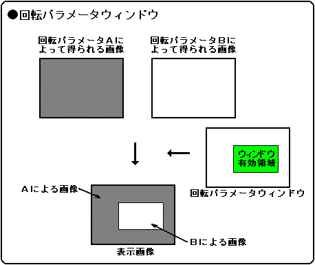
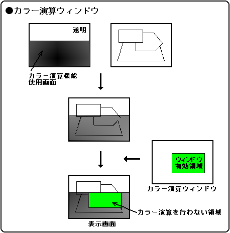

★
HARDWARE Manual★
VDP2ユーザーズマニュアル★
第８章 ウィンドウ
★
HARDWARE Manual★
VDP2ユーザーズマニュアル★
第８章 ウィンドウ
図8.7.1 ウィンドウ処理・１

図8.7.2 ウィンドウ処理・２

図8.7.3 ウィンドウ処理・３

15 | 14 | 13 | 12 | 11 | 10 | 09 | 08 |
N1LOG |
- |
N1SWE |
N1SWA |
N1W1E |
N1W1A |
N1W0E |
N1W0A |
|---|
07 | 06 | 05 | 04 | 03 | 02 | 01 | 00 |
N0LOG |
- |
N0SWE |
N0SWA |
N0W1E |
N0W1A |
N0W0E |
N0W0A |
|---|
15 | 14 | 13 | 12 | 11 | 10 | 09 | 08 |
N3LOG |
- |
N3SWE |
N3SWA |
N3W1E |
N3W1A |
N3W0E |
N3W0A |
|---|
07 | 06 | 05 | 04 | 03 | 02 | 01 | 00 |
N2LOG |
- |
N2SWE |
N2SWA |
N2W1E |
N2W1A |
N2W0E |
N2W0A |
|---|
15 | 14 | 13 | 12 | 11 | 10 | 09 | 08 |
SPLOG |
- |
SPSWE |
SPSWA |
SPW1E |
SPW1A |
SPW0E |
SPW0A |
|---|
07 | 06 | 05 | 04 | 03 | 02 | 01 | 00 |
R0LOG |
- |
R0SWE |
R0SWA |
R0W1E |
R0W1A |
R0W0E |
R0W0A |
|---|
15 | 14 | 13 | 12 | 11 | 10 | 09 | 08 |
CCLOG |
- |
CCSWE |
CCSWA |
CCW1E |
CCW1A |
CCW0E |
CCW0A |
|---|
07 | 06 | 05 | 04 | 03 | 02 | 01 | 00 |
RPLOG |
- |
RPSWE |
RPSWA |
RPW1E |
RPW1A |
RPW0E |
RPW0A |
|---|
| N0LOG | 1800D0H | ビット7 | 透明処理ウィンドウのNBG0用（またはRBG1用） |
| N1LOG | 1800D0H | ビット15 | 透明処理ウィンドウのNBG1用（またはEXBG用） |
| N2LOG | 1800D2H | ビット7 | 透明処理ウィンドウのNBG2用 |
| N3LOG | 1800D2H | ビット15 | 透明処理ウィンドウのNBG3用 |
| R0LOG | 1800D4H | ビット7 | 透明処理ウィンドウのRBG0用 |
| SPLOG | 1800D4H | ビット15 | 透明処理ウィンドウのスプライト用 |
| RPLOG | 1800D6H | ビット7 | 回転パラメータウィンドウ用 |
| CCLOG | 1800D6H | ビット15 | カラー演算ウィンドウ用 |
| xxLOG | 重ね合わせ論理 |
|---|---|
| 0 | OR |
| 1 | AND |
| N0W0E | 1800D0H | ビット1 | 透明処理ウィンドウのNBG0用（またはRBG1用） |
| N1W0E | 1800D0H | ビット9 | 透明処理ウィンドウのNBG1用（またはEXBG用） |
| N2W0E | 1800D2H | ビット1 | 透明処理ウィンドウのNBG2用 |
| N3W0E | 1800D2H | ビット9 | 透明処理ウィンドウのNBG3用 |
| R0W0E | 1800D4H | ビット1 | 透明処理ウィンドウのRBG0用 |
| SPW0E | 1800D4H | ビット9 | 透明処理ウィンドウのスプライト用 |
| RPW0E | 1800D6H | ビット1 | 回転パラメータウィンドウ用 |
| CCW0E | 1800D6H | ビット9 | カラー演算ウィンドウ用 |
| xxW0E | 処 理 |
|---|---|
| 0 | W0ウィンドウを使用しない |
| 1 | W0ウィンドウを使用する |
| N0W1E | 1800D0H | ビット3 | 透明処理ウィンドウのNBG0用（またはRBG1用） |
| N1W1E | 1800D0H | ビット11 | 透明処理ウィンドウのNBG1用（またはEXBG用） |
| N2W1E | 1800D2H | ビット3 | 透明処理ウィンドウのNBG2用 |
| N3W1E | 1800D2H | ビット11 | 透明処理ウィンドウのNBG3用 |
| R0W1E | 1800D4H | ビット3 | 透明処理ウィンドウのRBG0用 |
| SPW1E | 1800D4H | ビット11 | 透明処理ウィンドウのスプライト用 |
| RPW1E | 1800D6H | ビット3 | 回転パラメータウィンドウ用 |
| CCW1E | 1800D6H | ビット11 | カラー演算ウィンドウ用 |
| xxW1E | 処 理 |
|---|---|
| 0 | W1ウィンドウを使用しない |
| 1 | W1ウィンドウを使用する |
| N0SWE | 1800D0H | ビット5 | 透明処理ウィンドウのNBG0用（またはRBG1用） |
| N1SWE | 1800D0H | ビット13 | 透明処理ウィンドウのNBG1用（またはEXBG用） |
| N2SWE | 1800D2H | ビット5 | 透明処理ウィンドウのNBG2用 |
| N3SWE | 1800D2H | ビット13 | 透明処理ウィンドウのNBG3用 |
| R0SWE | 1800D4H | ビット5 | 透明処理ウィンドウのRBG0用 |
| SPSWE | 1800D4H | ビット13 | 透明処理ウィンドウのスプライト用 |
| CCSWE | 1800D6H | ビット13 | カラー演算ウィンドウ用 |
| xxSWE | 処 理 |
|---|---|
| 0 | SWウィンドウを使用しない |
| 1 | SWウィンドウを使用する |
| N0W0A | 1800D0H | ビット0 | 透明処理ウィンドウのNBG0用（またはRBG1用） |
| N1W0A | 1800D0H | ビット8 | 透明処理ウィンドウのNBG1用（またはEXBG用） |
| N2W0A | 1800D2H | ビット0 | 透明処理ウィンドウのNBG2用 |
| N3W0A | 1800D2H | ビット8 | 透明処理ウィンドウのNBG3用 |
| R0W0A | 1800D4H | ビット0 | 透明処理ウィンドウのRBG0用 |
| SPW0A | 1800D4H | ビット8 | 透明処理ウィンドウのスプライト用 |
| RPW0A | 1800D6H | ビット0 | 回転パラメータウィンドウ用 |
| CCW0A | 1800D6H | ビット8 | カラー演算ウィンドウ用 |
| xxW0A | 処 理 |
|---|---|
| 0 | W0ウィンドウの内側を有効にする |
| 1 | W0ウィンドウの外側を有効にする |
| N0W1A | 1800D0H | ビット2 | 透明処理ウィンドウのNBG0用（またはRBG1用） |
| N1W1A | 1800D0H | ビット10 | 透明処理ウィンドウのNBG1用（またはEXBG用） |
| N2W1A | 1800D2H | ビット2 | 透明処理ウィンドウのNBG2用 |
| N3W1A | 1800D2H | ビット10 | 透明処理ウィンドウのNBG3用 |
| R0W1A | 1800D4H | ビット2 | 透明処理ウィンドウのRBG0用 |
| SPW1A | 1800D4H | ビット10 | 透明処理ウィンドウのスプライト用 |
| RPW1A | 1800D6H | ビット2 | 回転パラメータウィンドウ用 |
| CCW1A | 1800D6H | ビット10 | カラー演算ウィンドウ用 |
| xxW1A | 処 理 |
|---|---|
| 0 | W1ウィンドウの内側を有効にする |
| 1 | W1ウィンドウ外側を有効にする |
| N0SWA | 1800D0H | ビット4 | 透明処理ウィンドウのNBG0用（またはRBG1用） |
| N1SWA | 1800D0H | ビット12 | 透明処理ウィンドウのNBG1用（またはEXBG用） |
| N2SWA | 1800D2H | ビット4 | 透明処理ウィンドウのNBG2用 |
| N3SWA | 1800D2H | ビット12 | 透明処理ウィンドウのNBG3用 |
| R0SWA | 1800D4H | ビット4 | 透明処理ウィンドウのRBG0用 |
| SPSWA | 1800D4H | ビット12 | 透明処理ウィンドウのスプライト用 |
| CCSWA | 1800D6H | ビット12 | カラー演算ウィンドウ用 |
| xxSWA | 処 理 |
|---|---|
| 0 | SWウィンドウの内側を有効にする |
| 1 | SWウィンドウの外側を有効にする |
★
HARDWARE Manual★
VDP2ユーザーズマニュアル★
第８章 ウィンドウ